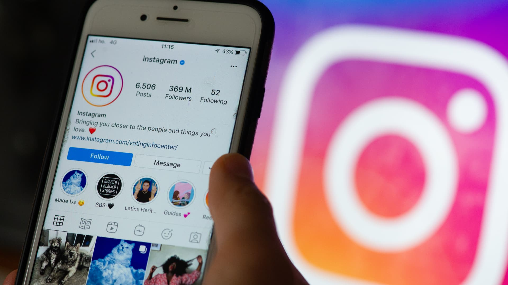
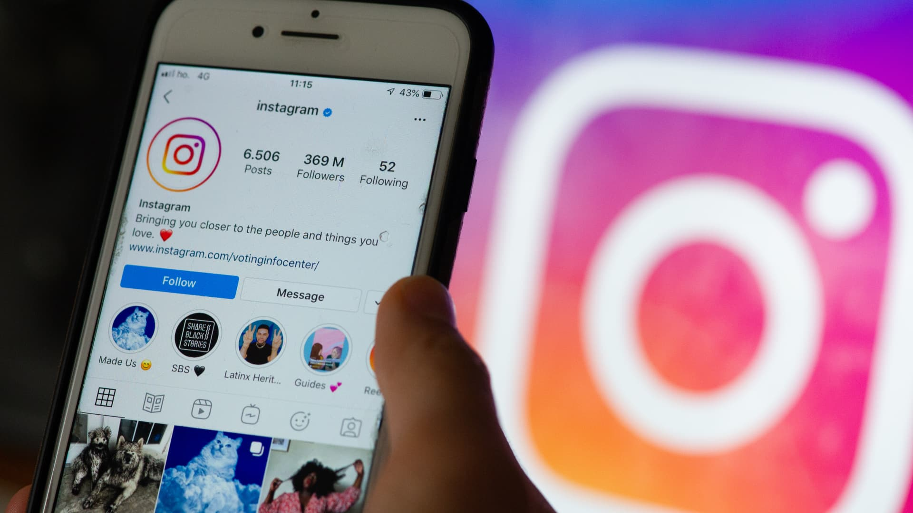
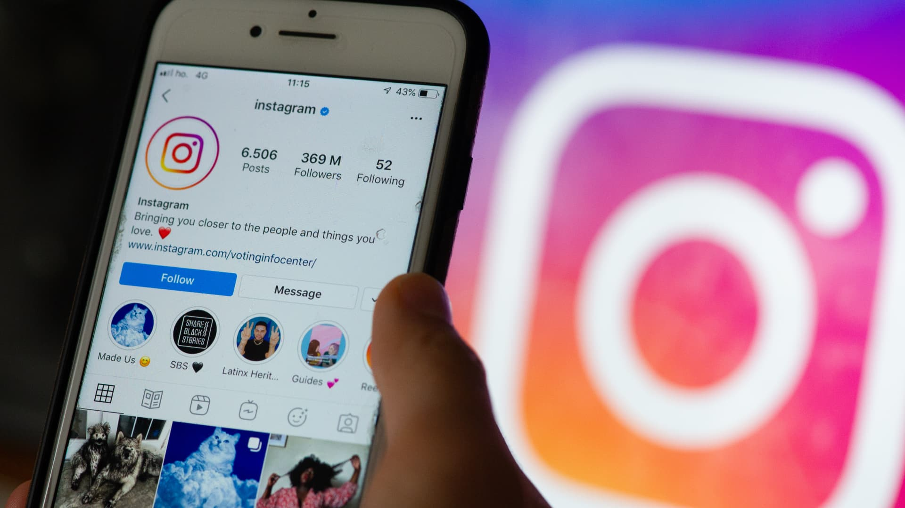

Continuara
Regresar al menúInstagram es una de las plataformas de redes sociales más populares del mundo, conocida por su enfoque en el contenido visual, como fotos y videos. Fue lanzada en 2010 por Kevin Systrom y Mike Krieger y adquirida por Facebook (ahora Meta Platforms) en 2012. Desde entonces, ha crecido enormemente, llegando a tener más de mil millones de usuarios activos mensuales.
Características Destacadas de Instagram
1. Enfoque Visual: Instagram permite a los usuarios compartir momentos de su vida a través de fotos y videos, utilizando una variedad de filtros creativos y herramientas de edición para mejorar su contenido visual.
2. Historias (Stories): Introducidas en 2016, las "Historias" son publicaciones de fotos o videos efímeras que desaparecen después de 24 horas. Esta característica ha permitido a los usuarios compartir momentos cotidianos de manera más informal.
3. Reels: Inspirados en la popularidad de TikTok, los Reels son videos cortos y creativos que los usuarios pueden editar, musicalizar y compartir, permitiendo una nueva forma de crear contenido viral y atractivo.
4. IGTV y Video en Vivo: IGTV es una plataforma de video más larga integrada en Instagram, que permite a los creadores subir videos más largos y producir series de contenido. Además, la función de video en vivo permite la transmisión en directo para conectarse en tiempo real con los seguidores.
5. Compras en Instagram (Instagram Shopping): Esta función permite a los usuarios comprar productos directamente desde la plataforma, convirtiéndola en una herramienta poderosa para marcas y minoristas.
6. Algoritmo Personalizado: El algoritmo de Instagram muestra contenido relevante para cada usuario según sus intereses, interacciones previas y la popularidad de las publicaciones, haciendo que el feed sea único para cada persona.
7. Cultura e Influencia: Instagram ha jugado un papel crucial en la creación de la cultura de los influencers, donde personas con grandes seguimientos en la plataforma colaboran con marcas y monetizan su contenido a través de patrocinio y publicidad.
DATOS CURIOSOS
°Popularidad Internacional: Instagram es especialmente popular entre los jóvenes, con más del 60% de los usuarios globales menores de 35 años.
°Más que una Red Social: Para muchos negocios, especialmente en los sectores de moda, comida y viajes, Instagram es una herramienta vital de marketing y promoción.
°Impacto Social: Instagram ha sido una plataforma clave para movimientos sociales, activismo y campañas de sensibilización a nivel global.
Instagram continúa evolucionando con nuevas funciones y herramientas que mantienen su relevancia en el mundo de las redes sociales. Su capacidad para adaptarse a las tendencias emergentes y su enfoque en la experiencia visual del usuario lo han convertido en una plataforma poderosa tanto para el entretenimiento como para el comercio.
|
 |